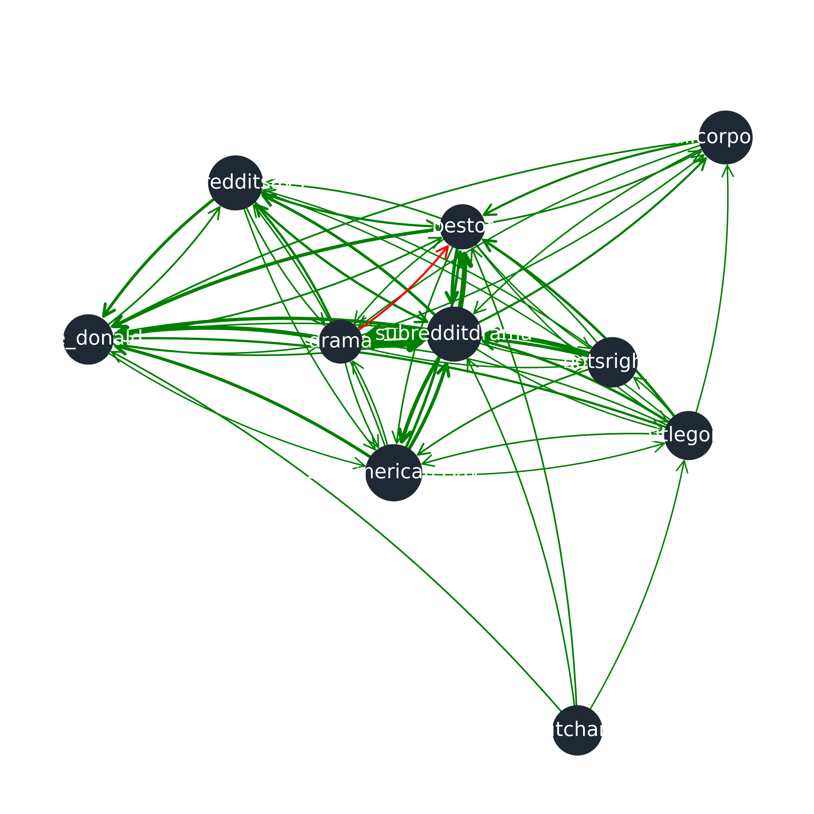
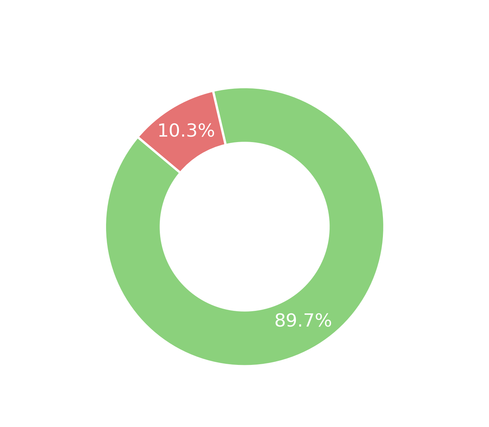

The Anatomy of a Hater

Introduction
Data Presentation
For those wondering what hyperlink the dataset looks like
So there’s this giant network of Reddit where every time one subreddit links to another, it counts as a little arrow from “source” to “target.”Here is a simplified version of what it represents with the 10 most active subreddits. If the arrow is red it means that the source subreddit sent more negative links than positive.
Hostile posts represent about 10% of the dataset — the goal is to understand what characterizes that “red” portion.
The dataset provides information on where the link is located, either title or body. Look at the negative - positive/neutral posts repartition according to where the post is located.
Let's not ommit our other important dataset : the SUBREDDIT EMBEDDINGS dataset
So the dataset takes about 2.5 years of Reddit activity in 51,278 unique subreddits, then turns each subreddit into a 300-dimensional vector that captures “who posts where,” meaning that subreddits that have similar users end up close together in the embedding space. Here it is projected in 2D using PCA dimension reduction ! Unfortunately the subreddits of the hyperlinks dataset and the ones from the embeddings dataset do not exactly match so we kept only the one present in both. We also removed all the subreddits that were sources of less than 5 posts because they were too inactive and would bias negativity rates with their small count. Thus filtered dataset kept 94% of the posts present in the hyperlink dataset and 41% of the subreddits.
Research Questions
So now that you've become a reddit hyperlink dataset Ninja like us aren't there many questions popping into your head ? We asked ourseleves the following...
ClusteringNinja
In case you were wondering what the plan is
Clustering subreddit into themes to identify different types of hate
After filtering the dataset, we retain 22,954 subreddits. In our analysis, a community corresponds to a single subreddit, while a theme refers to a group of subreddits that share similar audiences.
Do different kinds of communities exhibit different hostility patterns?
Rather than studying hate subreddit by subreddit, we group communities by theme and analyze hostility at a higher level. This allows us to compare how different types of communities behave, instead of focusing on isolated cases.
Step 1 — Clustering subreddits
Each subreddit is represented by a 300-dimensional embedding and subreddits close in the embedding space tend to attract users with similar interests. That's why the subreddits can be grouped into themes based on their embeddings.
Before clustering, to reduce noise and redundancy in this space, we apply a PCA on the filtered subreddit embeddings and keep 23 principal components. These components explain 80% of the total variance of the original embedding space, which allows us to work in a lower-dimensional space.
We then apply KMeans on the PCA-reduced embeddings and obtain 15 clusters. KMeans groups subreddits by minimizing distances within clusters. Other approaches such as DBSCAN after t-SNE or Louvain community detection were tested, but KMeans produced clusters that were more stable and easier to interpret at scale.
Below, the clusters can be visualized in 3D using either PCA or t-SNE. PCA highlights the global structure of the embedding space, while t-SNE helps visualize local neighborhoods.
Cluster overview
The resulting clusters vary greatly in size. Some capture very large and heterogeneous parts of Reddit, while others correspond to more specific themes. Below are representative subreddits for each cluster.
- Diverse Niche Communities (2,920): r/endlessspace, r/clubpenguin, r/dota2betting
- Geo-Politics (269): r/geopolitics, r/ukrainianconflict, r/truereddit
- Unofficial Platforms & Digital Commerce (130): r/steamgameswap, r/freestuffnyc, r/sweepstakes
- E-Sports (192): r/competitivehs, r/clashroyale, r/summonerswar
- Tinkerers (446): r/surfing, r/longboarding, r/soylent
- Pop-Cuture (1,111): r/davidbowie, r/sadcringe, r/100movies365days
- Large & Heterogeneous (14,106): r/askreddit, r/videos, r/place
- Mainstream Fandoms & Social Spaces (545): r/southpark, r/toontown, r/coys
- Cuture Literacy (1,567): r/wealth, r/qatar, r/farming
- Gaming Universe (382): r/witcher, r/overclocking, r/battlefront
- BizTech (185): r/technology, r/hacking, r/marketing
- Porn (489): r/milf, r/dirtysmall, r/bigboobsgonewild
- Sports Pro (169): r/nfl, r/fantasyfootball, r/ea_nhl
- Reddit Core – Memes & General Chat (261): r/videos, r/explainlikeimfive, r/place
- Self-Improvement & Mental Health (182): r/iwanttolearn, r/amiugly, r/teenagers
Step 2 — Definition of a Hater
To quantify hostility, we define the negativity rate of a cluster as:
Negativity rate = (number of negative posts) / (total number of posts)
This normalized measure allows us to compare clusters of very different sizes.
Based on this metric, we focus on four clusters: Geo-Politics, Reddit Core – Memes & General Chat, Pop-Culture, and Self-Improvement & Mental Health. These clusters have the highest negativity rates among all themes.
Although Culture Literacy also shows a high negativity rate, it is excluded from further analysis because its topics largely overlap with Geo-Politics, making it difficult to distinguish meaningful differences between the two clusters.
Step 3 — General observations on their negativity
Inter- vs intra-community negativity
This additional analysis allows to identify the most negative clusters inside their own communities (highest negativity rate on the posts linked to subreddits of the same cluster) and in their interactions with other clusters (highest negativity rate on the posts linked to another cluster).
Most selected clusters are highly negative both within their own communities and toward other clusters. This indicates that hostility is not limited to internal discussions, but also appears in interactions across themes.
The Self-Improvement & Mental Health cluster behaves differently. Here, negativity is more concentrated inside the community itself. This aligns with the nature of discussions in these subreddits, which often involve personal issues, advice, and direct feedback, and can therefore appear more critical in tone without being outwardly aggressive.
Cluster size and statistical patterns
We further analyze the relationship between cluster activity and hostility.
Together, these results indicate that cluster activity and outward-facing behavior are strongly associated with hostility asymmetry. Clusters that are more active and that send more posts than they receive are, on average, more likely to be net contributors of negative content.
Conclusion
The four selected clusters stand out because they have the highest negativity rates among all themes. Culture Literacy is excluded to focus on clusters that are clearly distinct in terms of topics and interaction patterns.
Looking more closely at Geo-Politics, Reddit Core – Memes & General Chat, Pop-Culture, and Self-Improvement & Mental Health, common characteristics of what we call “hater” clusters start to emerge.
These communities are not small or isolated corners of Reddit. On the contrary, they are among the largest and most active clusters, with many interactions both within and across communities. Indeed, high activity means higher exposure to conflict, which naturally increases the likelihood of negative exchanges.
Another shared feature is that these clusters are sending more posts than they receive. Hater clusters are therefore not only reacting to attacks from others, but often play an active role in spreading negativity through the network.
Further analyses will explore how these selected clusters differ in the way they react to hate, express negativity, and evolve over time.
Methods for ADA geeks

Content
Reaction dynamics
The aim is to analyze the typical profile of a hater in online communities. Based on the clusters identified in our previous analysis, we study the behavior and reactions of different subreddits according to their main topics of interest. Key indicators are: negativity levels, targeted groups or topics, and responses to incoming negative links. Bu-y these analyses we determine how aggressive is the hater in a community and how sensitive he is to negativity
Negativity rate analysis
Negativity of a subreddit or of a cluster is the total posts sent with negative link sentiment over total number of posts sent. By comparing negativity trends and repartition between targeted clusters and subreddits it enables us to extract characteristic behavior of a hater within a cluster.
Atatck spike analysis
To study how the cluster reacts to periods of high incoming negativity, we analyze changes in its behavior before and after these events. For each detected attack, we compute the cluster’s negativity rate over two symmetric time windows of seven days: one preceding the event and one following it.To determine whether the observed changes in negativity are statistically meaningful, we apply a Wilcoxon signed-rank test. This non-parametric test compares paired observations and does not assume a normal distribution of the data, making it well suited for skewed or sparse interaction measures such as negativity rates. The test evaluates whether the median difference between the pre- and post-attack negativity rates significantly differs from zero.
This approach allows us to assess whether periods of high received negativity are followed by systematic increases or decreases in negative linking behavior, thereby providing insight into the cluster’s reactivity and response strategies n the face of external attacks.
Feature analysis
Feature analysis is done by analysing the properties section of the hyperlink dataset. Indeed they provide informtion on structure, themes and emotions for each posts. The features that came out as characteristic hater features for both methods were kept.
Standardized mean difference
Logit analysis
Time analysis
[Short description of method 3.]
Limitations
(Fill this post limitations.)
r/Geo-Politics
Welcome to the Geopolitics cluster of subreddits. So the clustering gave us a community of subreddits relative to geo-politics and actuality. As showed below it is a negative subreddit with high proportion of post they negatively link to. They say that it is not "hate" but just being "critical" so let's have a closer look into their way of being "critical" then.
Reaction dynamics
We see they clearly send more negative links than they receive them. Looks like if you are a geo-politics
fan you are likely to be more an attackor than a target......
Of course we're just kidding here, we have paid close attention to the ADA course and it is far too early
to draw conclusions just with a plot.
First let's have a look into who targets who. The cluster has 269 subreddits in which, according to LLMs, 50% actually concern global and US politics; 50% concern ideologies and activism; and 10% concern world events/news. So that leaves us with 15% of outliers... Since we're interested in characteristic hater profile let's look at the top 10 most hating subreddits and leave the other aside for the moment.
Negativity in the Geo‑Politics cluster comes from two main sources: big drama subreddit that spread a lot
of hate broadly, and
tiny subreddits that are extremely hostile but only towards a few specific targets. Larger communities
(like drama subs) regularly
attack mainstream subreddits, while smaller ideological subreddits concentrate their hostility on closely
related or opposing communities.
Together, this creates a mix of high‑volume general attacks and narrow, highly targeted negativity.
And this heatmap shows exactly this: some may find it highly intimidating and others (like us) highly
satistfying. But what it shows is that in the geopolitics cluster,
some subreddit are commmon attackers and some are more engaged and attack only one or a few subreddits.
Now, we'd like to name drop and let you have the whole picture. You can see in the following graphs who attacks who, how much, and
compare with other subreddits!
For example, see how r/mensright subreddit attacks r/relationships, r/twoxchromosomes, r/feminisms and
r/askreddits the most ?
It also looks like r/subredditdrama and r/drama are the most problematic subreddit of the geo-politic
cluster. Could it be because people who follow politics
and news are also naturally drawn to gossip? Or is it beaucause clustering with PCA and kmeans has its
limits ? This is an open question...
Attack spikes
Now let's see how the cluster reacts to periods of high incoming negativity. Now to look at methods details please refer to the dedicated post. Basically the idea here is to see how sensitive are people who follow politics/news/drama. Our guess is that they are.
For the Geo-Politics cluster, we find 47 moments where it suddenly receives a lot of negativity. When that happens, the cluster tends to fire back. After these events, it sends more negative links, and a larger share of its interactions are negative overall. And it is statistically significant. In other words, it’s not just posting more; it’s posting more hostile content. This pattern shows up consistently, suggesting that when Geo-Politics gets attacked, it usually responds by escalating the negativity rather than cooling things down. So Geopolitic and news related users are kind of sensitive. On average, 84.9% of negative links are redirected toward the same clusters that generated the attack spikes during peak periods. However, nearly half of the negative links (48.7%) target the exact same subreddits that were responsible for the attack spikes, indicating a strong tendency toward direct retaliation at the subreddit level.
Negative link activity after attack peaks
Characteristic Feature Analysis
Pronouns feature analysis
In terms of how negativity shows up in the features, looking at the standardized mean differences for structural features, a higher value means that a given pronoun shows up more in negatively linked posts than in positive ones. In the Geopolitics cluster, LIWC_Ipron (impersonal pronouns like “it”, “its”, “that”...) and LIWC_SheHe (she/he pronouns) are clearly more common in negative-link posts, and that mean difference is statistically significant. The logit analysis backs this up: the pronouns most strongly associated with negative links are again LIWC_Ipron and LIWC_SheHe, and because the model is multivariate it captures the unique effect of each feature while controlling for correlations with the others, which helps avoid confounding issues. Basically the typical “geopolitics hater” seems to lean heavily on third-person and impersonal pronouns, which suggests a lot of blaming and finger‑pointing at others. The combo of more third‑person and fewer “you” pronouns also hints at a style that’s more about indirect aggression and complaining about people or groups to third parties than actually addressing others directly. Looks like the geopolitic hater is afraid of direct confrontation and may be kind of a coward ?
Sentiment/emotion feature analysis
Across both the mean‑difference and logit analyses, anger is the emotion that most consistently lines up with negative links, so when posts go negative here, they’re doing it in an angry way. General affect (LIWC_Affect: emotional words overall) is more common in negative posts if you just look at raw means, but once you control for the other features, it’s not strongly tied to negativity anymore. This is because affect is strongly correlated with anger. So the hater is not “being emotional” in general, he is angry and it shows in his writing style.
Limitations
Reddit context is messy: sarcasm, brigading, moderation changes, and cross-posting can all affect interpretation.
r/Pop-Culture
Welcome to the Pop culture cluster of subreddit!
Let's not loose time and dig in to see what these 10% of negativity is made of.
Reaction dynamics
The top hater subreddit hits about 80% negativity, but that’s mostly tiny subreddits with barely any activity behind those numbers. Subreddits like r/bitchimabus and r/wallpaperdump look more toxic, but it’s off a handful of links, so more “one‑off outbursts” than steady hate streams. Looks like the real problem is r/againstkarmawhores: it’s both pretty negative and very active, so it’s the one really shaping how toxic the Pop‑Culture cluster looks overall.
Some subreddits, especially r/againstkarmawhores, repeatedly throw shade at lots of big, mainstream targets. Most of the other super‑negative subreddits just light up one or two cells on the heatmap, meaning short, targeted bursts of hate rather than constant drama. Taken together, the Pop‑Culture cluster’s negativity looks and localized: spikes around specific topics or communities, not a universal hate‑machine. Now look at inter-cluster relations, see how they target a wide variety of l-clusters with no external cluster dominating. Kind of boring. Mainly entertainment, meme... Negative linking behavior in the Pop-Culture cluster is driven more by content critique, humor, or norm enforcement than by sustained ideological conflict. Let's look att the attack spikes and reactivity to see if we find anything spicier.
Attack spikes
Now let's see how the cluster reacts to periods of high incoming negativity. Now to look at methods details please refer to the dedicated post. The idea here is still to see how sensitive are Pop-culture interested users.
Overall, these results indicate that the Pop-Culture cluster does respond to periods of high received negativity, but in a weakly reactive manner. Rather than strong escalation or retaliation, the response appears modest and likely reflects short-lived or localized increases in negative interactions rather than systematic behavioral shifts. The negativity rate slighlty increases after negativoty spike and is statistically significant there may be a little sensitivity here. But aren't we all a little sensitive?
Roughly 80% of post‑attack negative links go back toward the same clusters that started the drama, and about 57% hit the exact same subreddits. So retaliation happens both broadly at the cluster level and very directly at specific communities, mixing “shoot back at the bloc” with “shoot back at the exact subreddit.
Negative link activity after attack peaks
Feature analysis
Pronoun features analysis
In here the Ppron (all personal pronouns) proves to be proportionally much more represented in the negative links than in the positive/neutral ones and this shows in the logit analysis too. Suggestong conflict is personal and not necessariliy objective as usually one tends to avoids pronouns when wanting to write in an objective way.
Sentiment/emotion feature analysis
Anger and affect are still significantly more present in negative posts than in neutral or positive ones. A new pattern that emerges is the LIWC_Swear feature, which is the s econd most negatively correlated feature with link sentiment. This suggests that pop‑culture‑oriented users (often younger, Gen Z, or teenagers) tend to express their anger through use of swear words. Many swear words are insults so their way of expressing hate is by insulting others.
Limitations
(Fill this post limitations.)
r/Reddit Core
Welcome to the Reddit Core cluster of subreddits !
What are the 11% of negativity made of this time ?
Reaction dynamics
The Reddit Core cluster is basically a punching bag: it gets way more negative links than it sends for the whole period and rarely hits back. Looks like it is more a victim of hate than a hater. You see big waves of hate around mid‑2015 and late 2016, but those spikes in incoming negativity aren’t followed by matching revenge spikes. So Reddit Core acts as a negativity sink in the network—constantly targeted, mostly chill in response—unlike the more politicized clusters that tend to fight back when they’re attacked.
The Reddit Core cluster exhibits morderate negativity rates overall with no subreddits exceeding 50%. The r/britishproblems and r/animalsbeingjerks have the highest negativity rate but these values are driven by a very small number of total link. So the hater behavior of this cluster, when there is, seems to be sporadic rather than sustained negative behavior. The heatmap shows this trend well. Only quityourbullshit emerges as a widespread aggressor, directing moderate negativity (teal/green blocks) across a long list of major subreddits like pics, funny, and worldnews, consistent with its culture of calling out fake posts.
The network shows that most of the portion of their aggression is actuallu internal "friendly-fire" directed at other Core Subreffits. Central hubs like r/quityourbullshit and r/animalsbeingjerks frequently target fellow core members such as r/funny, r/pics, and r/aww (indicated by the numerous connections to purple nodes), suggesting a strong culture of self-policing and meta-commentary within the memes and general chat sphere. The nature of negativity here is rather teasing than hate no ?
Attack spikes
Lets look at the sensitivity to negativity of the Reddit Core subreddit.
The post spike slight increase in negativity is within the range of normal fluctuation and is not statistically significant. So looks like Reddit Core is insensitive to hate ? Or rather, as we just saw, since the negativity they are targetted with are mainly "friendly attacks", there is nothing to be sensitive about.
Negative link activity after attack peaks
Feature Analysis
Pronouns feature analysis
Again more impersonal pronouns and She/he pronouns that come out much more in negatively linked posts than positive. The difference in the univariate mean difference is statistically significative and comes out as the most negatively correlated with link sentiment. Yet the absolute value of the logit coefficient is lower than what showed in other clusters (like geopolitics). Looks like negatively linked posts show similar patterns accross clusters: maybe blaming other people to a third party is uncorrelated with interests but characteristic to a hater.
Sentiment/emotion feature analysis
In the reddit‑core cluster, negative posts are clearly more emotionally loaded than neutral or positive ones, with a noticeable presence of anger. Anger and overall affect are tightly linked, so once anger is in the model, the generic emotionality feature (LIWC_Affect) moves closer to zero in the logit coefficients, while sadness shows up as the second strongest emotion on the negative side. So haters in the reddit‑core cluster don’t just sound harsh, they also show sadness. Which softens the purely aggressive picture we had of negativity and negatively linked posts.
Limitations
(Fill this post limitations.)
r/Mental Health

Don't worry, you are in a safe space here. Or you are supposed to be at least. Let's see what the 9% of negaitivity is made of !
Here like for Reddit Core cluster, the Mental Health cluster is mainly a taret of negative links.
The Self‑Improvement & Mental Health cluster is pretty chill overall: negativity is there, but it’s nowhere near the levels of more conflict‑heavy spaces like Geo‑Politics, and none of the top subreddits go past ~40% negativity. The heatmaps confirms that trend with the most active subreddits (r/changemyview, r/offmychest, r/relationships, and r/depression) display partial horizontal patterns, reflecting moderate negativity toward a restricted set of targets, often thematically related or highly visible subreddits. Overall, the heatmap suggests that negativity in this cluster is fragmented, context‑dependent, and mostly turned inward, which fits with how support and self‑improvement communities usually work
Attack spikes
Overall, these results indicate that the Self-Improvement & Mental Health cluster exhibits little to no systematic reactive behavior following periods of high received negativity. Despite being a frequent recipient of negative links, the cluster does not escalate its own negative interactions in response. This finding is consistent with earlier structural analyses showing that negativity in this cluster is low-intensity, context-dependent, and inward-focused, rather than retaliatory or conflict-driven. Looks like the basic hater won't be found in Mental health and self improvement communities. But let's dive into the feature analysis to see how they communicate when they send negativity.
Negative link activity after attack peaks
Feature Analysis
Pronouns feature analysis
We saw that the mental health cluster was more of a sink to hate than a source. Yet the fetaure analysis shows a higher absolute value of proportion of presence between negative and positive posts. Indeed it the personal pronouns feature difference of the means reaches 0.015 (when geopolitics reached only 0.004). Again mostly personal pronouns but the I pronoun difference appears much higher in this cluster than others. This is a marker of self-focused attention and sel-involvment. One can say that negativity in Mental health cluster is centered around interpersonal distress.
Sentiment feature analysis
Sentiment feature analysis show no results that stands out compared to the other clusers. Except that absolute values of univariate mean differences is more important. Negativity in the mental healuth cluster show the same patterns as negativity in the other clusters but it seams that emotions are more present than in others, suggesting more users that open up.
Limitations
(Fill this post limitations.)
Time-Analysis
The Hater's Schedule
Do haters have a specific time schedule ? Is there more negativity during summer than during winter ? Or on the week-end as opposed to during the week ?
Let's plot the data and find out !
Let's look at the week-level. In the plot above you can see the "typical" week : for example above Tuesday you can read the mean of the negativity rate of every single Tuesday in our dataset. (Reminder : this negativity rate is simply the number of negative posts divided by the number of total posts for that particular day).
We will fit a logistic regression on the days of the week : Monday represents the reference negativity rate (value 0, also called the intercept). For each other day of the week, the model tries to find the value by which the rate for this day changes on average when compared with Monday. Logistic regression can calculate log-odds (the chance between 0 and 1 that a random post on e.g. Tuesday is negative) based on categorical variables (the days of the week). The negativity rate can be naturally interpreted as a log-odd : if there are 10 negative posts for 100 total posts, the rate of 0.1 means that a randomly picked post has 0.1 chance of being negative. So it makes sense to use this model. Let's look at the results.
How do we interpret this table ? The p-value tells us the probability that the null-hypothesis "there is no difference of negativity ratio between day X and Monday" is true, so we can only consider that there is some statistically significant event when the p-value < 0.05. The column "increase %" tells us by how much the negativity rate increased (or decreased if it's negative) between day X and monday. It is calculated using the coefficient beta discovered by the logistic regression model for this day as follows : increase %=(exp(beta) - 1)*100. The confidence interval column represents the range in which the increase % will fall 95% of the time (calculated with a binomial distribution / Wald interval) and finally the z-score=beta / standard_error represents the "effect size" . So we see that two days have a stastically significant p-value : Saturday and Sunday with a corresponding percentage % of 7.35% and 6.3% respectively. Nice ! Did we determine that haters tend to hate more on the weekends ? Sadly there are two more values in the table that we need to pay attention to : pseudo R-squared and Pearson's Chi-square. R-squared tells us the explaining power of the model, it is a value from 0 to 1 that represents the amount of the observed difference in rate that our model explains (1 would mean that our model explains 100% of the observed difference, i.e the model perfectly encampsulates the observed phenomenon). Our logistic regression can't provide us with a real R-squared metric, but this pseudo-metric is an approximation. On the other hand the Chi-square measures the goodness of fit of our model : it sums the squared differences between observed data and model predictions (weighted by expected values). Low values indicate that our predictions closely match reality (it's a good model) while high values show significant mismatches. Our table gives us an abysmally small pseudo R-squared, and an extremely high Chi-square, which means our model has almost no explaining power, and a terribly bad fit. In short, it tells us almost nothing 😢.
Let's try the same analysis comparing the different months of the year.
Is the hater sensitive to world events ?
After having examined the negative posting behavior over time, we wonder if it is possible to see the effect of important events on the amount of negativity posted on Reddit. Intuitively this would make sense : if some controversial event happens in the real world, some Redditors will probably post about it in a deragotive manner or argue about it. With some luck and if the event is important enough, there would be enough discussion on the subject inside or between subreddits, generating enough hyperlinks associated with a negative link sentiment such that we detect a change.
Of course here we are only detecting correlation, not causation. As an example, Trump's election in November 2016 correlates quite strongly with a decrease in negativity when compared to September. But is it really because Redditors are happy about the election ? Or is there some other confounding factor ? For example it might be possible that Redditors are just less negative in November than in September every year. Or it could be because the campaigning preceding the election has higher above average negativity due to the political tensions, and that the period after the election simply went back to the normal rate ? Let's test out the first hypothesis : "it's not the election, it's just a recurring pattern every year". At first it seems quite simple : we could just use a t-test to compare the observed difference in mean negativity around the election in 2016 with the difference in mean negativity at the same time period in years with no election. But the thing is, we only have about three years of data so we have two other similar time-windows (in 2014 and 2015) to compare it with. Only two samples is a meager sample size, and the result of the test would not be very meaningful. To get out of this dead end, we have to use a tricky technique called bootstrap resampling. Here's how it works : in our non-election years (2014-2015) we take the daily negativity rate of all days of September (so 2 times 30). Then we create synthetic or "bootstrap" Septembers by sampling at random (with replacement) 30 out of these 60 days to creaete one "bootstrap" September. We can repeat this as many times and in theory each bootstrap September should be different (since there are so many different possible combinations of days). Using the days of two Septembers, we can create a huge number of new Septembers (for example 100) : we have artificially mutliplied the size of our sample by 50. We do the same in parallel with our Novembers 2014-2015, and for each pair of bootstrap months we calculate the mean rate of each and finally the difference of both. We now have 100 synthetic, non-election-year differences of mean negativity to compare our observed 2016 difference to. With this synthetic data we create the following 95% confidence interval (i.e into which range do 95% of all synthetic differences fall) : Table A
Alright so what does this tell us ? According to our bootstrap distribution, the expected difference of mean negativity in non-election years should be completely almost negligeable at ~1% and positive, instead of our observed -18.8%. More importantly, we can see that our observed difference in 2016 lies very far outside the 95% confidence interval of non-election years. This information supports the hypothesis that Redditors were really less negative after November 8 2016 (compared to September 2016) and that it isn't a yearly pattern.
Ok about our second question : now that we know that something special happened in 2016 that made November's negativity rate lower than September's, how can we know that whether November was a less negative than usual month or September was a more negative than usual month ? To discover that we will compare the post election time window's (November 2016) mean negativity rate to the mean negativity rate of all other months in the dataset. Careful, before we were talking about an increase or decrease % between the mean rates of two months, now we're just talking about the mean rate of a month. Table B :
Bullshit conclusion : we can conclude that 1) we cannot predict hater negativity behavior pattern in time (no hater's schedule) 2) hater's may react minorly to certain events
Welcome! 👋
This website digs into how online conflict actually spreads on Reddit. Using data from 2014–2017, we map how subreddits connect to each other and uncover a less visible network built around negativity. We zoom in on the roughly 10% of interactions marked as hostile and take a closer look at the behavior behind them where they post, how they write, who they target, and how often they show up. The goal is to understand patterns: how “hate” travels between communities and what fuels online anger in the first place. If you’re interested in Reddit dynamics, social networks, or the mechanics of online conflict, you’re in the right place. Jump in, explore the data, and join the discussion!!